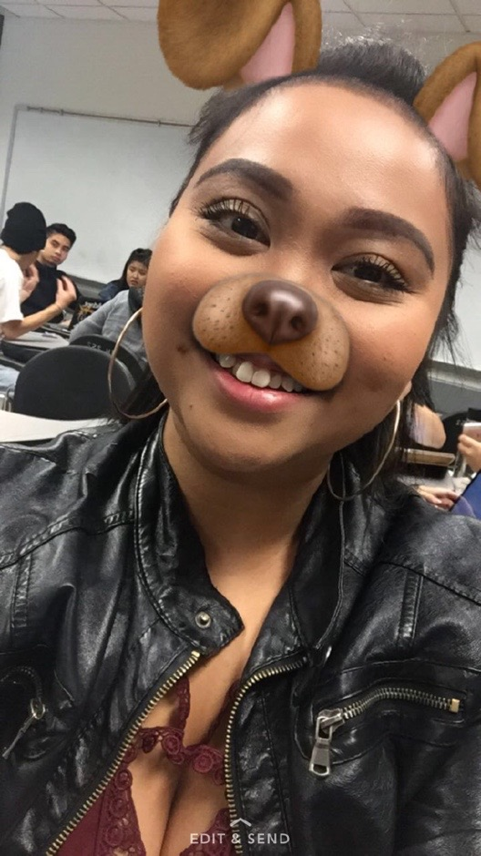
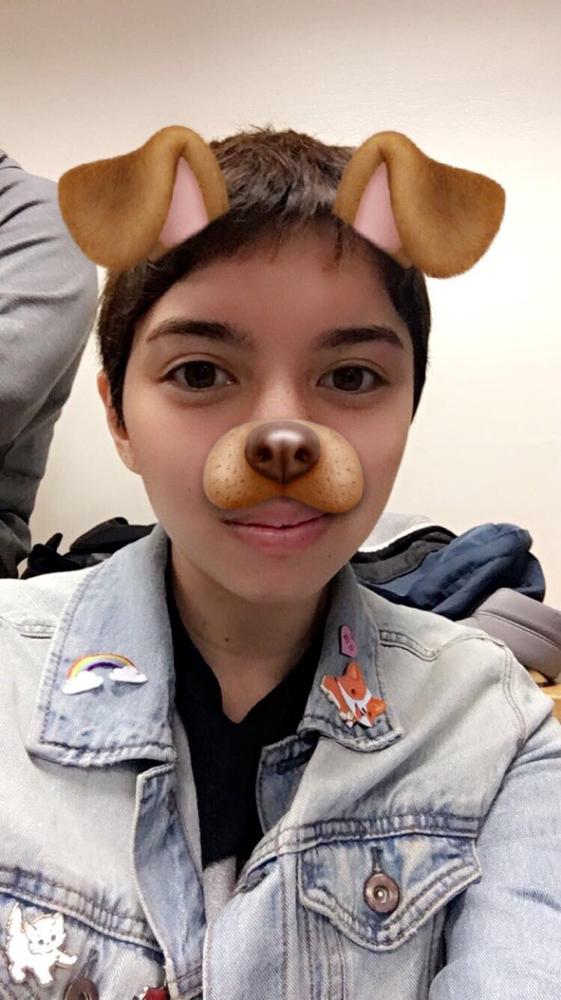

Health Wellness and Sports
By: Rosely Marquez
Football is a sport that is not played by many Filipinos, especially in the NFL. I interviewed a couple of young Filipino football players about their experiences. N.J Acosta, 24 and Luke Cruz, 18 both attending college, experienced, at one point in their lives, their families not supporting their football careers. Acosta said that he was in the PeeWee league when he was in elementary school but in high school he was forced to quit. “My parents didn’t let me [play]. They thought I was too small and thought that I I might break my bones. I wanted to though, my parents were protective,” he replied, after I asked him why he was forced to quit. Cruz, originally a wrestler, expressed that his family was not fond of the idea of him playing football. Cruz explained, “At first they weren’t [supportive], because they didn’t want me to get hurt for wrestling. And later on in the year, my sophomore year, they especially didn’t want me to, because I was pulled up for varsity.” He clarified that his family was familiar with wrestling because his cousin wrestled. They were unfamiliar with football, they didn’t know how safe it was. He added, “My whole family is supportive now. Once they saw me play, they started to support me. My mom was always supportive from the start.” Another component for a reason why many Filipinos did not play football. I asked Acosta, an alumni of Burton High School, if there were a good amount of Filipino players at his high school , he said “Yeah, there was a pretty good amount, if they had the grades.” He explained that some Filipino students could not make the team or suspended from the team because they did not meet academic requirements. Cruz, who went to South City High School had a different exposure. Most of Filipinos who went to South City High School had the grades, but they didn’t “try out.”
Sources and additional information:
NFL Hero is FilAm
Amano is First Pure Filipino Player in NFL
Doug Baldwin and the flag of the Philippines
Amano is First Pure Filipino Player in NFL
By: Melissa Miyamoto
Filipino cultural or folk dancing. There are several different dance practices with the Filipino culture such as Tinikling, Pandanggo sa ilaw, Maglalatik, Kuratsa, Itik-Itik, and many more. The national dance of Tinikling represents a tikling bird that reflects elements of a daily Philippine life. Walking through tall grass blades and tree branches. This dance uses two bamboo poles that are held by dancers on both ends of the poles. The dancers are hoping in and out of the bamboo poles while the holders are moving them back and forth as well. This dances becomes increasingly faster and faster.
Source:
Tinikling Dance
By: Kristina Santiago
The idea of mental health is about how a human being’s mind is being triggered and how it affects the person; it doesn’t matter how or why have it it can just come out of nowhere, or maybe growing up, it stayed with the person. One thing that can help improve a person’s mental health is of course is self-care. From there, people can find additional help from others to get better.
Source:
Mental Health Care of Filipino Americans
By: NJ
Filipino-Americans are reported to be one of the highest group in the Asian community that have taken or abused drugs, alcohol, and tobacco use. Drugs are specifically significant in the Filipino-American culture because study has shown that Filipinos use drugs when they either feel isolated or depressed. However, in the Philippines, President Duterte has a different opinion on drugs and since incumbent in the office, more than 4,000 people have been reported dead in the drug trade.
Source:
Filipino American Psychology: A Handbook of Theory, Research, and Clinical Practice
An Exploratory Study of Social Connections and Drug Usage Among Filipino Americans
Drug Addiction in the Philippines
Fil-Ams join thousands in calling for legalization of marijuana
Duterte favors medical marijuana use
By: Jorrell Cid
Filipino/a basketball has been around for quite some time now and to see the evolution of the game itself as well as the people who participate in it will always have a growing part in their lives. Basketball is one of those things that will make or break friendships depending if you take it serious or for fun. This brings about the idea of lifestyle being intertwined with labor/success. Growing up in my household it was kind weird to be told to grow up with two choices for my future: work in the medical field or be a professional athlete. As a young kid to have your future somewhat decided for you is a tough thing to swallow just because I have no say. In my eyes, there are two kinds of people that pertain to basketball. One, is the basketball player who has a really good chance to make it to the pros, but only has a high school degree with one year of experience in college. Then, there is the second basketball player who has a high school degree, went to a 4-year college, and plays basketball on the side as a hobby. Two different lifestyles and types of success, but the same as to how we represent who we are.
Source:
PHILIPPINE Basketball History
Why Filipinos love basketball
INSIDE ACCESS: BASKETBALL’S DEEP ROOTS IN THE PHILIPPINES
By: Mav DeCastro
Soccer, in many ways, has transformed Philippine sports in the last century. Ranging from youth soccer to the proud national team called “ the Azkals”, Filipinos have kept up with other countries in terms of competitive Soccer. Instead of being known for just Basketball or Boxing, Soccer has also been a sport in which many Filipinos have grown to play and master. Although the Azkals have gained most of the attention, little do people know, Soccer has been one of the crucial and key sports in Philippine history. Dating back all the way to the 1800’s, one of the very first sports introduced in the Philippines was indeed Soccer, or Football. Soccer was introduced when English/European settlers came to the Philippines and it slowly grew from small teams to the national league. The first official Soccer match in the Philippines took place in the year of 1907 and the first Azkal was Paulino Alcantara Riestra, who was half Spanish and half Filipino born in Iloilo City. Riestra ended up playing for FC Barcelona and till this day, is known to be the youngest player to score and play for FC Barcelona in the years of 1912-1927, scoring above 350 goals in his entire career. Since then, more clubs, like the Philippine Amateur Football Association (now known as the Philippine Football Federation) started to open up, eventually building up the culture of Soccer in the Philippines.
Source:
FIFA/Coca-cola World Ranking
A look at the history of Philippine Football: The first & future Azkals – The Philippine Star
Azkals rise to highest ever FIFA ranking
By: Jesse Leocario
Boxing has a rich history embedded in the Philippines. Introduced by U.S. soldiers during American occupation of the Philippines, boxing was brought to help decrease levels of suicide, alcoholism, and illness. Boxing was also to help promote self-reliance and resourcefulness to sudden dangers or difficulties. Before Spanish colonialization, Filipinos had the martial art of Suntukan, which was often reffered to as “dirty street boxing.” Suntukan also focused on attacking the upper body, but some key differences were the usage of bladed weapons, and more brutal attacks that were designed for hurting or even crippling opponents. Suntukan was later banned for its brutality under Spanish Colonialization, and many turned to boxing as a substitute. In the end, boxing has made an impact in the Philippines and is a popular sport, with the Philippines producing some of the worlds amazing boxers, such as Pancho Villa and more recently Manny Pacquiao.
Citation:
The Origins of Philippines Boxing, 1899-1929
Pancho Villa: Greatest Asian fighter
Before Manny Pacquiao, There Was Flash Elorde
Nonito Donaire
After Pacquiao: 5 Filipino boxers 25-and-under to follow
By: Jess DeFranco
Pre-colonial practices for physical and spiritual healing in the Philippines was mainly in the role of the babaylan. Predominantly women, the babaylan wielded social and spiritual power. Her role was that of a matriarch and leader until Spanish colonization in the 16th century and the resulting spread of Catholicism that still conquers the Philippines as the majority religion to this day. Also dating back before western colonization, medicinal practices relied heavily on herbs and food as a form of healing. Thankfully, the knowledge of the properties of certain food are still known today by Filipina/os passing down this knowledge from generation to generation for centuries.
Citation:
Walking between heaven and earth: The babaylan today
Philippine Herbal Medicine
Babaylan Women as Guide to a Life of Justice and Peace
By: Drae
Concept:
Sikolohiyang Pilipino (Filipino Psychology). Kapwa, or togetherness, is the core construct of Filipino Psychology. Dr. Virgilio Enriquez, the father of Sikolohiyang Pilipino, coined the term Kapwa which is embedded in traditional Filipino values.
Sources:
Sikolohiyang Pilipino (Filipino psychology):A legacy of Virgilio G. Enriquez*
Alfredo V. Lagmay
Filipino Values – Indigenous Concepts in Filipino Psychology
A Longitudinal Experimental Study Comparing the Effectiveness of Happiness-Enhancing Strategies in Anglo Americans and Asian Americans
By: Vee Flanagan
Filipino American health and wellness has ties with food and body image. Because Filipino Americans have some of the highest rates of depression and diabetes, it can then be seen that Filipino Americans have a difficult time with maintaining a positive body image. According to [insert name here], Filipina women in urban areas in the Philippines struggle with their self esteem. Unsatisfied body image can also be related to Filipinos within the diaspora as well.
Sources:
Assessment of Dietary Intakes of Filipino-Americans: Implications for Food Frequency Questionnaire Design
Dramatic Rise in Overweight and Obesity in Adult Filipino Women and Risk of Hypertension
Cultural Expressions of Bodily Awareness Among Chronically Ill Filipino Americans
Becoming Visible: Oral Histories of Filipino Americans in California
Writers
-

Hello, my name is Rosely Marquez, but please call me Rose. I am 23 years old, currently attending San Francisco State University, majoring in Psychology. This class has been a gratifying experience with valuable lessons and unforgettable people. Thank you Ate Allyson, our IA, Kevin, and of course, Bagong Gising Silog! You’re welcome.
-
Hi, my name is Melissa Miyamoto. I am a Liberal Studies major in my first semester here at SF State. I would like to thank Ate Allyson and our IA Kevin for making this class a fun learning experience for me. Even though I am not Filipino, I still felt welcomed by my barangay when working on our projects together. I will miss my gising silogs :’)
-
Dahello! Kristina Santiago here! I’m a Business Administration major, concentrating in General Business. This class was legit the highlight of my fall semester; each class meeting was lit! But this class was also the most emotional and most open class that I ever took but it was so fun! Because of this, AAS 353 will always have a special place in my heart. A million thank you’s to Ate Allyson for being the best professor ever! Like taking this class it felt as if we were being taught by not only a teacher, but also a sister, a mom, a cousin, etc. who understands what we are all going through, good or bad. Love you Ate! Also thank you to our IA’s, special shoutout Kevin for being the real MVP! Thanks Kevin for being so chill and so helpful! And of course, my barangay. Y’all made this semester so fun and so enjoyable! I’m going to miss you guys! Love you FAM! Let’s get some Silogs sometime! LOL
-
What’s good in the hood! As for my barangay, they know me as NJ which stands for Neri Jr. I’m a Political Science major and one day I want to make change in the Asian American community, especially for Filipina/o-Americans. I want to have a voice and hoping it can be a positive impact. This class was probably my favorite class I’ve taken at SF State. I now can call you friends for life and hope we can all kick it one day! Thank you everyone for being welcoming and positive!
-
Jorrell “#JoFromCostco” Cid, is a Business Information Systems major. Traveling recreation basketball leagues is almost life. Kevin, Ate Allyson, and the rest of the barangay, a super huge thank you for the class experience and will be one my favorite and most engaging classes. I am glad to have made new friends and will look to continue them outside of the classroom.
-
Hello beautiful people! My name is Mav DeCastro. I’m a BECA (Broadcast & Electronic Communication Arts) major and I am also a 2nd year student here at state. When I’m not studying, I’m an RA (Resident Advisor/Assistant) in SFSU ResLife, a TA for AAS 218, dancing, or watching Netflix until I fall asleep. This class has equipped me with skills that I can use in my everyday life and I thank Ate, along with the other IAs (especially Kevin), for making this semester incredible. I’ve been waiting to learn more about my cultural roots and myself. So, thank you for giving me just that. I will miss you all
-
Hello everyone! My name is Jesse Leocario, a San Francisco State student majoring in kinesiology. AAS 353 has been an incredible experience, where it has allowed me to learn and explore more in what being Filipinx american means to me. Thank you to my groupmates, classmates, instructional aids, and Ate Allyson for making this class an unforgettable memory; you are all family to me!
-

Hey there! My name is Jess DeFranco and I am majoring in Dance and, after the amazing experiences in this class, planning to minor in Asian American Studies! This class has really helped me get back in touch with my heritage and explore more of my identity as half white, half Filipina queer woman. Much of being a dance major involves being creative in my art form and innovative in my performances. I feel like furthering my studies into my heritage and those of other Asian Americans can help me in touching down on different narratives and topics. This class was truly amazing and made my mornings brighter!
-
Danrae “Drae” Sabbaluca, psych major, pilosopo, gwapo, kapwa-tao. What’s good, barangay? Ate, Kev. Thank you for an incredible experience. This is the best class I’ve ever taken with the greatest people <3.
-

Hey y’all. The name’s Vee Flanagan. I’m 22 and I’m a WGS & AAS major. I am a 2nd generation Filipinx American with Tagalog-Bisayan/Ilocano roots. AAS 353 has been an amazing experience and I hope fellow FilAms can continue to take this course and other FilAm related classes. Shoutout to Ate Allyson, our IA Kevin, and to the rest of my barangay! We made it!